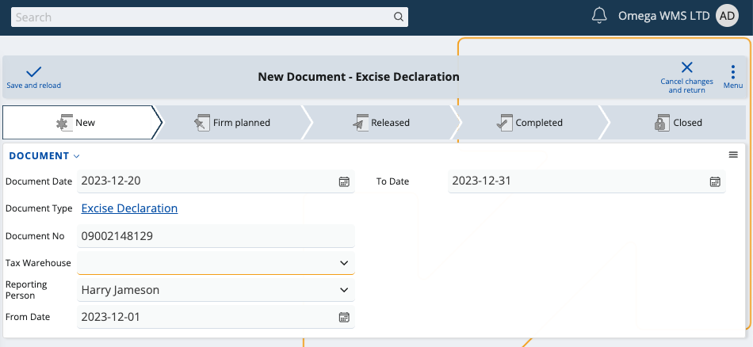

Excise
According to EU legislation, certain products like alcoholic beverages, beer, energy and cigarettes are subject to excise tax whenever they leave a tax warehouse.
The Excise module is designed to assist businesses in meeting their legal duties to regional custom agencies or other institutions requiring excise taxes. Using its resources, you can create and generate all the necessary documents and definitions related to your excise payments. At the end of each month, they are all included in a final excise declaration.
Note
The EU Excise legislation is applicable to all member states and affects all excise products, but there are regional differences in how documents are filled and submitted.
The main process flow in Excise goes like this:
Tax Warehouse → Issue/Receipt Transactions → Excise Stamp Operations → Excise Declaration
Tax warehouse
To use this module, you first need to define a digital tax warehouse.
Its purpose is to store all of your manufactured and imported products which are registered under the common Excise law.
It requires a name and special numbers for validation, provided by your customs agency.
Note
Tax warehouses are linked to a specific geographic location, but they can encompass more than one inventory store defined in the software.
Issue/Receipt transactions
Owning a tax warehouse obligates you to generate transaction documents for everything that happens to your excise products.
By law, these documents must be exported and sent over to the customs office and/or your regional tax-collecting agency.
Example:
If a product enters your tax warehouse, receipt transactions need to be created to reflect the excise tax for this operation.
If a product is sold or leaves your tax warehouse for another, generating the respective issue transactions will be necessary.
When products are imported from or exported to another tax warehouse, the electronic administrative document (e-AD) allows you to report each transaction. If operations are limited to your tax warehouse, you must fill an electronic excise tax document (e-ADD) instead.
Definitions
You can take advantage of a variety of system and custom definitions.
Excise allows you to both use and create new excise product types, categories, and other entities required for transaction documents.
Note
Some excise-related definitions are auto-generated while others need to be manually set-up. It is not possible to submit a document without defining a excise product type for all of your excise products.
Once you fill a transaction document, you must export it as an XML file and send it to your taxing authority and/or customs office.
Excise stamp operations
When excise products are manufactured, imported or exported from a tax warehouse, they need to have a stamp placed on them.
In the case of alcoholic beverages, for example, every bottle must have a excise stamp.
You can create new excise stamps and relate them to specific operation types such as:
- Received from the customs
- Placed on the bottles within the tax warehouse
- Returned unused
In most cases, excise stamps are provided by the customs office and placed on every bottle of alcohol.
Reporting all the stamps you have used is a compulsory section of the final excise declaration.
Note
Excise stamps have unique serial numbers, emission and date of placement. When creating a excise stamp report, you generate another transaction document which includes the excise operation type, related products and number of used stamps. It is possible for fewer stamps to be placed than originally received.
Excise declaration
As a legal requirement, all of your monthly transactions are automatically included in a final excise declaration.
It unites the transaction documents you have reported for the month, summarizes your product availability and excise payments, and includes a excise stamping report.
Note
Customs offices may have the legal authority to electronically monitor the movement of products in and out of your tax warehouse.

A typical excise declaration has the following sections:
- Excise amount owed and paid for each issue/receipt transaction within the tax warehouse
- Past and current availability of each excise product in the tax warehouse, including incomes and expenses
- Excise stamping report covering each banderol operation
At any time, you can visualize this declaration and correct any mistakes before officially submitting.
When ready, you need to export it as an XML file and send it to the respective taxing authority.
Note
Customs or other taxing authorities may need direct access to your ERP.net system in order to observe your tax warehouse. In the case of Bulgarian clients, for example, there's a separate environment offering the ability for custom agencies to generate reports and see which products are available in a tax warehouse for a specific period of time.

Post-excise
If your declaration meets all legal requirements, the excise tax is settled and products can be moved freely from one store to another.
Learn more about Excise in the following articles: